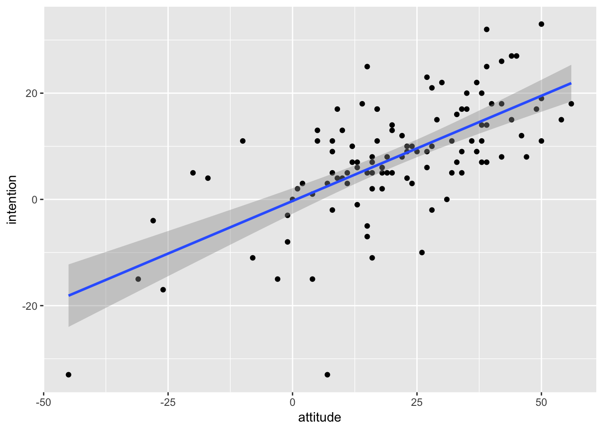

Content
Before we begin…
We will be using these packages in this weekbook:
library(tidyverse)
library(lm.beta)Correlation
As discussed in the lecture, a correlation assesses the relationship between two continuous variables. In the example below, we will assess the association between attitudes towards exercise and intention to exercise (see here for more detail on both scales).
Remember, whenever we analyse data, we will roughly be following this procedure:
- Clean the data for analysis.
- Run statistical test
- Plot data
- Write-up analysis.
1. Clean the data for analysis.
First, we must calculate the variables we will use in the correlation (summing the items for both scales), and then select the variables in the dataframe.
data1.clean <- data %>%
mutate(attitude = exercise.attitude.1 + exercise.attitude.2 + exercise.attitude.3 + exercise.attitude.4 + exercise.attitude.5 + exercise.attitude.6 + exercise.attitude.7 + exercise.attitude.8 + exercise.attitude.9 + exercise.attitude.10 + exercise.attitude.11 + exercise.attitude.12 + exercise.attitude.13 + exercise.attitude.14 + exercise.attitude.15 + exercise.attitude.16 + exercise.attitude.17 + exercise.attitude.18 + exercise.attitude.19,
intention = exercise.intention.1 + exercise.intention.2 + exercise.intention.3 + exercise.intention.4 + exercise.intention.5 + exercise.intention.6 + exercise.intention.7 + exercise.intention.8 + exercise.intention.9 + exercise.intention.10 + exercise.intention.11) %>%
dplyr::select(student.no,attitude,intention)2. Run statistical test
We run the correlation using the cor.test() function. Similar to analyses we have covered previously, this function requires a formula, and a dataframe.
For a correlation, given that there are no IVs/DVs per se (i.e., we cannot infer causality - do positive attitudes towards exercise lead to increased intentions, or does increased intentions to exercise leads to more positive attitudes?), this is reflected in the formula for a correlation.
~ variable1 + variable2
Below is the code and output from a correlation conducted in R.
cor.test(~ attitude + intention,data = data1.clean)##
## Pearson's product-moment correlation
##
## data: attitude and intention
## t = 9.1087, df = 107, p-value = 5.294e-15
## alternative hypothesis: true correlation is not equal to 0
## 95 percent confidence interval:
## 0.5398797 0.7551031
## sample estimates:
## cor
## 0.66086873. Plot data
Scatterplot
Scatterplots are the best way to visualise correlations, as it allows you to see the raw data and whether you can have confidence in your correlation coefficient. For instance, it can tell you if your significant correlation is due to a small number of outliers.
Usually in a scatterplot, each point represents a single participant, with each variable on the x- and y-axis (this is interchangable).
In the code below, the geom_point() function adds the points on the scatterplot. The geom_smooth() function adds the line-of-best-fit. geom_smooth() requires the additional ‘method’ argument, which tells it what type of line you want. In this instance, we specify “lm” to tell it we want a linear model.
ggplot(data1.clean,aes(x = attitude,y = intention)) +
geom_point() +
geom_smooth(method = "lm",formula = y ~ x)
4. Write-up analysis.
In order to write-up a correlation in APA format, you need the following information:
- The number of participants.
- The correlation coefficient (i.e., the test statistic).
- The p-value.
Here is an example of a write-up for the correlation above (can you see where each of the numbers came from?):
There was a significant correlation between attitudes toward exercise and intentions to exercise, r(118) = 0.66, p < .001.
Regression with One Predictor
When running a regression with one predictor (i.e., one IV), this is identical to running a correlation. See the code below and compare it to the correlation above.
1. Clean the data for analysis.
This code is identical to the code above.
data2.clean <- data %>%
mutate(attitude = exercise.attitude.1 + exercise.attitude.2 + exercise.attitude.3 + exercise.attitude.4 + exercise.attitude.5 + exercise.attitude.6 + exercise.attitude.7 + exercise.attitude.8 + exercise.attitude.9 + exercise.attitude.10 + exercise.attitude.11 + exercise.attitude.12 + exercise.attitude.13 + exercise.attitude.14 + exercise.attitude.15 + exercise.attitude.16 + exercise.attitude.17 + exercise.attitude.18 + exercise.attitude.19,
intention = exercise.intention.1 + exercise.intention.2 + exercise.intention.3 + exercise.intention.4 + exercise.intention.5 + exercise.intention.6 + exercise.intention.7 + exercise.intention.8 + exercise.intention.9 + exercise.intention.10 + exercise.intention.11) %>%
dplyr::select(student.no,attitude,intention)2. Run statistical test
To run a regression, we use the lm() function, which stands for ‘linear model’. Again, the first argument of this function is the analysis formula, and the second is the data.frame being analysed. For the formula, we revert back to the original form with the DV on the right, and predictors on the left.
#Unstandardised Model
model2 <- lm(intention ~ attitude,data = data2.clean) %>%
summary()
model2##
## Call:
## lm(formula = intention ~ attitude, data = data2.clean)
##
## Residuals:
## Min 1Q Median 3Q Max
## -35.477 -4.834 -0.288 5.374 19.354
##
## Coefficients:
## Estimate Std. Error t value Pr(>|t|)
## (Intercept) -0.29626 1.21185 -0.244 0.807
## attitude 0.39612 0.04349 9.109 5.29e-15 ***
## ---
## Signif. codes: 0 '***' 0.001 '**' 0.01 '*' 0.05 '.' 0.1 ' ' 1
##
## Residual standard error: 8.522 on 107 degrees of freedom
## (9 observations deleted due to missingness)
## Multiple R-squared: 0.4367, Adjusted R-squared: 0.4315
## F-statistic: 82.97 on 1 and 107 DF, p-value: 5.294e-15In order to report a regression in APA format, we are required to have standardised coefficients. There are two ways we could do this. First, we could standardise the variables ourselves. Recall from the lecture that to standardise a variable, we need to subtract the mean and divide by the standard deviation. We can use summarise() function (covered in previous weeks) to first get these values.
#Get means and standard deviation for both variables.
summary.stats <- summarise(data2.clean,
intention.mean = mean(intention,na.rm = TRUE),
intention.sd = sd(intention,na.rm = TRUE),
attitude.mean = mean(attitude,na.rm = TRUE),
attitude.sd = sd(attitude,na.rm = TRUE))
summary.stats## intention.mean intention.sd attitude.mean attitude.sd
## 1 7.831858 11.16988 20.96429 18.81677Then, using the mutate() function (again, covered in previous weeks), we can standardise the variables ourselves.
data2.standardised <- cbind(data2.clean,summary.stats) %>%
mutate(z.intention = (intention - intention.mean)/intention.sd,
z.attitude = (attitude - attitude.mean)/attitude.sd)Then, we then use these standardised variables in the linear regression.
model2.standardised1 <- lm(z.intention ~ z.attitude,data = data2.standardised) %>%
summary()
model2.standardised1##
## Call:
## lm(formula = z.intention ~ z.attitude, data = data2.standardised)
##
## Residuals:
## Min 1Q Median 3Q Max
## -3.1761 -0.4328 -0.0258 0.4811 1.7327
##
## Coefficients:
## Estimate Std. Error t value Pr(>|t|)
## (Intercept) 0.01578 0.07309 0.216 0.829
## z.attitude 0.66731 0.07326 9.109 5.29e-15 ***
## ---
## Signif. codes: 0 '***' 0.001 '**' 0.01 '*' 0.05 '.' 0.1 ' ' 1
##
## Residual standard error: 0.763 on 107 degrees of freedom
## (9 observations deleted due to missingness)
## Multiple R-squared: 0.4367, Adjusted R-squared: 0.4315
## F-statistic: 82.97 on 1 and 107 DF, p-value: 5.294e-15Alternatively, we can use the lm.beta() function from the lm.beta package. The lm.beta() function takes the original unstandardised model as its first argument, then returns the standardised coefficients. The simplist way to use it is to add it to the pipeline before the summary() function.
model2.standardised2 <- lm(intention ~ attitude,data = data2.clean) %>%
lm.beta() %>%
summary()
model2.standardised2##
## Call:
## lm(formula = intention ~ attitude, data = data2.clean)
##
## Residuals:
## Min 1Q Median 3Q Max
## -35.477 -4.834 -0.288 5.374 19.354
##
## Coefficients:
## Estimate Standardized Std. Error t value Pr(>|t|)
## (Intercept) -0.29626 0.00000 1.21185 -0.244 0.807
## attitude 0.39612 0.66087 0.04349 9.109 5.29e-15 ***
## ---
## Signif. codes: 0 '***' 0.001 '**' 0.01 '*' 0.05 '.' 0.1 ' ' 1
##
## Residual standard error: 8.522 on 107 degrees of freedom
## (9 observations deleted due to missingness)
## Multiple R-squared: 0.4367, Adjusted R-squared: 0.4315
## F-statistic: 82.97 on 1 and 107 DF, p-value: 5.294e-15Notice that in the summary table above, an additional column named Standardized is added. Also notice that no matter which method you use, the standardised coefficients are the same (once you account for rounding). Everytime you calculate the standardised coefficients, the estimate for the intercept will equal 0. Therefore, you do not need to report the estimated intercept when reporting standardised coefficients.
3. Plot data
With only two variables (one predictor), the plot would be the same as with a correlation, so let’s skip this step just now.
4. Write-up analysis.
Everything reported in a regression is given in the summary() function. APA guidelines specify that standardised coefficients (betas) should be reported. Therefore, make sure you report the standardised model.
For the model, you need the following information: * the R-squared statistic. * the F-statistic and associated degrees of freedom. * the and p-value for the model.
For each predictor, you need the following information: * the standardised coefficient. * the t-statistic. * the p-value for that coefficient.
Note, if reporting standardised coefficient, there is no need to report the estimate for the intercept (because it is always 0).
So the write-up for the regression above would look something like this below. Again, with only one predictor, the results from a regression is identical to a correlation, so you’re better off reporting it that way to avoid confusion and the extra hassle, but we will go through the write-up below just to demonstrate:
Linear regression indicated that 43.67% of variance of intention to exercise could be explained by the predictors, (F(1, 107) = 82.97, p < .001). Attitudes significantly predicted intentions to exercise (Beta = 0.66, p = < .001).
For one or two predictors, it is simple enough to include the coefficients and p-value of predictors in-text like above. However, as your model becomes more complicated, it may be more useful to include a table instead. More on this later.
Regression with Multiple Predictors.
The real advantage of regression is when there is more than one predictor in the model. In the example below, we run a regression with intention to exercise as the outcome variable, and attitudes to exercise and behavioural control as predictors.
1. Clean the data for analysis.
data3.clean <- data %>%
mutate(attitude = exercise.attitude.1 + exercise.attitude.2 + exercise.attitude.3 + exercise.attitude.4 + exercise.attitude.5 + exercise.attitude.6 + exercise.attitude.7 + exercise.attitude.8 + exercise.attitude.9 + exercise.attitude.10 + exercise.attitude.11 + exercise.attitude.12 + exercise.attitude.13 + exercise.attitude.14 + exercise.attitude.15 + exercise.attitude.16 + exercise.attitude.17 + exercise.attitude.18 + exercise.attitude.19,
intention = exercise.intention.1 + exercise.intention.2 + exercise.intention.3 + exercise.intention.4 + exercise.intention.5 + exercise.intention.6 + exercise.intention.7 + exercise.intention.8 + exercise.intention.9 + exercise.intention.10 + exercise.intention.11,
control = exercise.control.1 + exercise.control.2 + exercise.control.3) %>%
dplyr::select(student.no,attitude,intention,control)2. Run statistical test
#Unstandardised Model
model3 <- lm(intention ~ attitude + control,data = data3.clean)
summary(model3)##
## Call:
## lm(formula = intention ~ attitude + control, data = data3.clean)
##
## Residuals:
## Min 1Q Median 3Q Max
## -31.921 -4.773 -0.327 5.659 18.894
##
## Coefficients:
## Estimate Std. Error t value Pr(>|t|)
## (Intercept) -4.38951 2.88889 -1.519 0.132
## attitude 0.34612 0.05507 6.285 7.77e-09 ***
## control 0.44408 0.29385 1.511 0.134
## ---
## Signif. codes: 0 '***' 0.001 '**' 0.01 '*' 0.05 '.' 0.1 ' ' 1
##
## Residual standard error: 8.488 on 104 degrees of freedom
## (11 observations deleted due to missingness)
## Multiple R-squared: 0.4533, Adjusted R-squared: 0.4428
## F-statistic: 43.11 on 2 and 104 DF, p-value: 2.313e-14#Standardised Model
lm.beta(model3) %>% summary()##
## Call:
## lm(formula = intention ~ attitude + control, data = data3.clean)
##
## Residuals:
## Min 1Q Median 3Q Max
## -31.921 -4.773 -0.327 5.659 18.894
##
## Coefficients:
## Estimate Standardized Std. Error t value Pr(>|t|)
## (Intercept) -4.38951 0.00000 2.88889 -1.519 0.132
## attitude 0.34612 0.57857 0.05507 6.285 7.77e-09 ***
## control 0.44408 0.13911 0.29385 1.511 0.134
## ---
## Signif. codes: 0 '***' 0.001 '**' 0.01 '*' 0.05 '.' 0.1 ' ' 1
##
## Residual standard error: 8.488 on 104 degrees of freedom
## (11 observations deleted due to missingness)
## Multiple R-squared: 0.4533, Adjusted R-squared: 0.4428
## F-statistic: 43.11 on 2 and 104 DF, p-value: 2.313e-143. Plot data
It is difficult to plot data from a multiple regression, as, in extreme circumstances, controlling for the variance in one predictor could change the direction of relationship in another. The simplist way is to plot scatterplot for each predictor with the dependent variable separately. If plots don’t appear to map well onto the predicted model - it could indicate you have an issue with your model (e.g., multicollinearity).
ggplot(data3.clean,aes(x = attitude,y = intention)) +
geom_point() +
geom_smooth(method = "lm")
ggplot(data3.clean,aes(x = control,y = intention)) +
geom_point() +
geom_smooth(method = "lm")4. Write-up analysis.
When reporting regression coefficients in a table, you do not need to report the statistics in-text, though you still need to describe the pattern of results in words.
We used multiple regression to predict intention to exercise from attitudes to fitness and behavioural control. We found that both predictors explained 45.33% of the variance (F(2, 104) = 43.11, p < .001). Regression coefficients are reported in Table 1. Attitudes to fitness positively predicted intention to exercise. There was no significant effect of behavioural control.
Table 1. Regression coefficients for linear model predicting intention to exercise.
| predictor | beta | t | p-value |
|---|---|---|---|
| Attitudes to Fitness | 0.58 | 6.29 | < .001 |
| Behavioural Control | 0.14 | 1.51 | 0.13 |